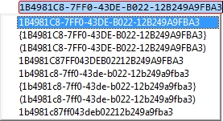
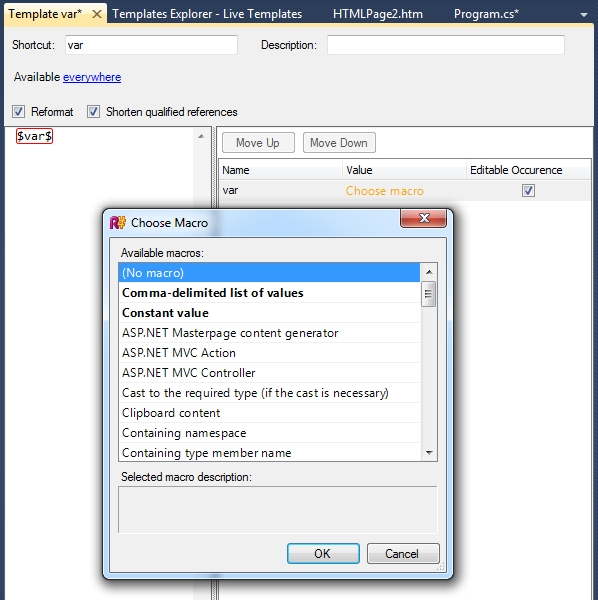

实时模板
ReSharper的实时模板提供动态文本扩展。在文本编辑器中，如果您键入“实时模板”快捷方式，或从“代码完成”列表中选择它，则模板将被扩展为带有可编辑和链接的“热点”的代码段。
热点就像代码片段中的字段。您可以在可编辑的热点之间切换，然后在建议的值上键入。键入时，所有链接的热点都会更新。与类似的Visual Studio代码片段功能相比，Live Templates的优点之一是，可编辑的热点可以包含可以执行.NET代码的宏 ，例如显示代码完成列表或转换您键入的值。
例如，ReSharper包括一些宏，这些宏调用Basic，Smart或Type补全，显示逗号分隔列表的代码补全列表，为变量名，当前文件的名称，名称空间或类等提供建议。它还可以提供更有趣的动态用法，例如，“ nguid”模板定义单个热点，该热点设置为使用“ New GUID”宏。调用时，模板将扩展并评估热点，这将导致新的GUID宏创建新的GUID，并提供具有GUID各种不同字符串表示形式的完成列表。类似地，宏可以采用用户键入的值并将其转换，可能使其全部变为大写或全部变为小写，等等。

宏很容易添加到Live Template本身-只需使用表单在文本中创建一个变量$value$ 。该变量可以编辑，也可以不可编辑，可以通过单击编辑器中的链接并从列表中选择宏将其与宏关联。列表中的某些项目以粗体显示部分或全部文本。这些宏可以作为模板定义的一部分进行参数化，例如通过提供要完成的项目列表，用于字符串值的格式，关联的类型名称等。该值输入到模板编辑器中。

上次修改时间：2017年7月10日